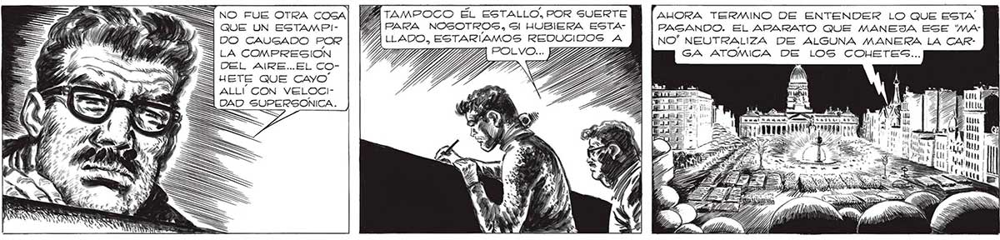
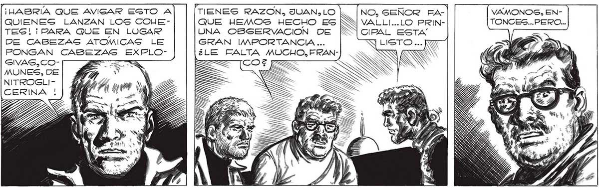
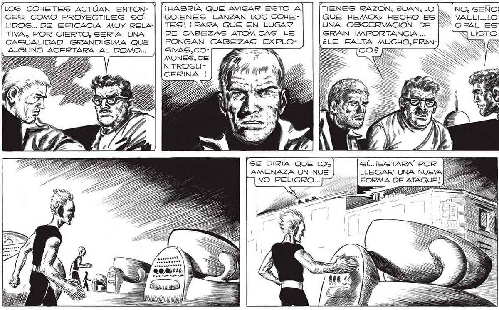

N LOS COHETES ACTÚAN ENTONCES COMO PROYECTILEG SsOLIDOS... DE EFICACIA MUY RELATIVA, POR CIERTO, SERIA UNA CASUALIDAD GRANDISGIMA QUE ALGUNO ACERTARA AL DOMO... E, MÁS= NO FUE OTRA COSA| Mk 3 QUE UN ESTAMPIq DO CAUGADO POR LA COMPRESION OSL ARE. EL EOHUETE QUE CAYO S ALLÍ CON VELOCIGIVAS,COMUNES, DE NITROGLICERINA | rr» »»»» r.».»»>»>» rr.» ++ TAMPOCO ÉL ESTALLO, POR SUERTE ZA PARA NOGOTROS, Sl HUBIERA ESTALLADO,, ¡HABRIA QUE AVISAR ESTO A QUIENES LANZAN LOS COUETES! ¡PARA QUE EN LUGAR DE CABEZAS ATOMICAG LE PONGAN CABE GRAN EXPLO=A [SE DIRÍA QUE LOS AMENAZA UN NUEVO PELIGRO... TIENES RAZON, JUAN, LO QUE HEMOS HECHO ES UNA OBSERVACION ODE | ¡MANPORTANCIA ... ¿LE FALTA MUCHO, FRANAHORA TERMINO DE ENTENDER LO QUE ESTA 269 FAGANDO. EL ARARATO QUE MANEJA ESE 'MANO” NEUTRALIZA DE ALGUNA MANERA LA CARGA ATOMICA DE LOS COUWETES... A sour as an] 8 Ala. ¡Us $ Y e 1 ¿e MA 7 1 ' 1 EN a i E MEN MA | 07; Mn | ==! 0 PS e “a == VAMONOS, ENTONCES...PERO... NO, SENOR FAVALLI...LO PRINCIPAL ESTA LUSTO ... [WN Ex EFECTO, LOS “MANOS*" HABIAN CORRIDO DE PRONTO COMO ALERTADOS POR ALGO QUE NOSOTROS AÚN NO HABLAMOS LOGRA: DO DETECTAR Y QUE DEBIA SER GRAVE, A MANIPULAR... ..


